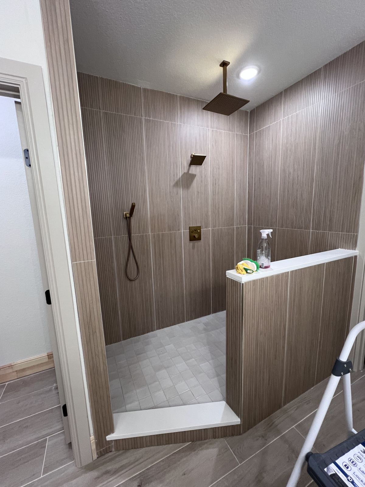

Post-Construction Cleaning in Dallas–Fort Worth
The remodel is done, but the dust isn't. All over DFW, we clear fine construction dust from every reachable surface, inside your cabinets, along the windowsills and across the floors, so your new space is ready to live in. See your price instantly.
★★★★★ 5.0-star rated on Google · Background-checked team · English-speaking team · Locally owned, serving all of DFW · Open 7 days

The last step of every renovation
Even after the crew sweeps up, a remodel leaves something behind: a fine layer of drywall dust and sawdust that settles on every ledge, inside every drawer and in the corners of every room. Wipe it once and it's back the next day. Post-construction cleaning is a slow, surface-by-surface clean that gets that dust out, so you can finally enjoy the work you paid for.
We handle after-renovation cleaning and construction cleanup following kitchen and bathroom remodels, flooring installs, additions and whole-home renovations all over Dallas–Fort Worth.
"If you want a cleaning company that truly takes great pride in a job well done, Salt of Earth is the right choice." — T. Rasmussen
Your post-construction cleaning checklist
Dust and debris
- Fine construction dust wiped from reachable surfaces, ledges and trim
- Light debris wiped down from counters, shelves and built-ins
- Baseboards, doors and door frames hand-wiped
- Vents and returns dusted
- Ceiling fans and light fixtures dusted (reachable heights)
Cabinets and fixtures
- Cabinets cleaned inside and out, including shelves and drawers
- Countertops and backsplash cleaned
- Sinks, faucets, tubs, showers and toilets cleaned and polished
- Light switches, outlet covers and hardware wiped
- Appliance exteriors wiped
- Adhesive residue, sticker film and paint specks spot-removed from glass, fixtures and hard surfaces where they can be lifted safely
Windowsills and floors
- Windowsills and window tracks cleaned of dust and grit
- Mirrors cleaned
- Hard floors vacuumed and mopped, edges and corners included
- Carpets vacuumed
Add-on: interior windows.
Please note: we don't haul heavy debris, handle hazardous materials or do exterior work. Have your contractor remove large debris, leftover materials and dumpsters before we arrive.
Get My Post-Construction Price →
Who it's for
Homeowners after a kitchen or bathroom remodel, new flooring, fresh paint or a full renovation, who want the dust gone before the furniture goes back in.
Builders and contractors who want a finished project to look its best at the final walkthrough. Working on more than one home? The Multiple Properties option in our booking tool can quote them together, or call (469) 210-8005.
Buyers and sellers of newly updated homes, often paired with a move-in / move-out clean.
How booking works
- See your price. Start with our instant quote and use your booking notes to tell us what was remodeled, which rooms and how dusty things are. Bigger project? Call us to talk through the scope.
- Pick a date after the last trade leaves. Schedule once paint, fixtures and final touch-ups are finished, so new dust doesn't settle on a clean home.
- Pay after the clean. Payment is collected after the clean is complete, not at booking.
Careful work from a local team
We're a locally owned Richardson company, 5.0-star rated on Google, and every team member is background checked. Our English-speaking cleaners make it easy to coordinate with you or your contractor on access, timing and the areas that need extra attention. We're open seven days a week, 8:30 AM–7:30 PM. Pets heading back into the house after the work? We're pet-friendly; just mention them in your booking notes.
Once the dust is gone, a recurring plan keeps your updated home looking new. For a limited time, recurring clients get a reduced rate on every visit.
When should I schedule a post-construction clean?
After all work is finished, including paint, fixtures and touch-ups, and after large debris has been hauled away. Otherwise, the dust settles right back.
Do you haul away construction debris?
No. We handle the detail cleaning. Large debris, leftover materials and anything hazardous should be removed by your contractor before we arrive.
Can you remove paint specks and sticker residue?
We spot-remove adhesive and paint specks from glass, fixtures and hard surfaces where they can be lifted safely. Point out problem spots in your booking notes.
Do you clean the outside of the house?
No. Our post-construction cleaning is interior only.
Are your cleaners English-speaking?
Yes. Our cleaners speak English, so it's easy to explain exactly what you want and get updates during your clean.
Ready to enjoy your new space?
See your price in about two minutes and choose a day after the work wraps up. Serving homes all over Dallas–Fort Worth.
Get My Post-Construction Price →
Call (469) 210-8005 · info@sotecleaning.com · Open Mon–Sun, 8:30 AM–7:30 PM
Nearby: Richardson · Plano · Garland · North Dallas · Murphy · Wylie · Sachse · Allen · Rowlett · All DFW service areas